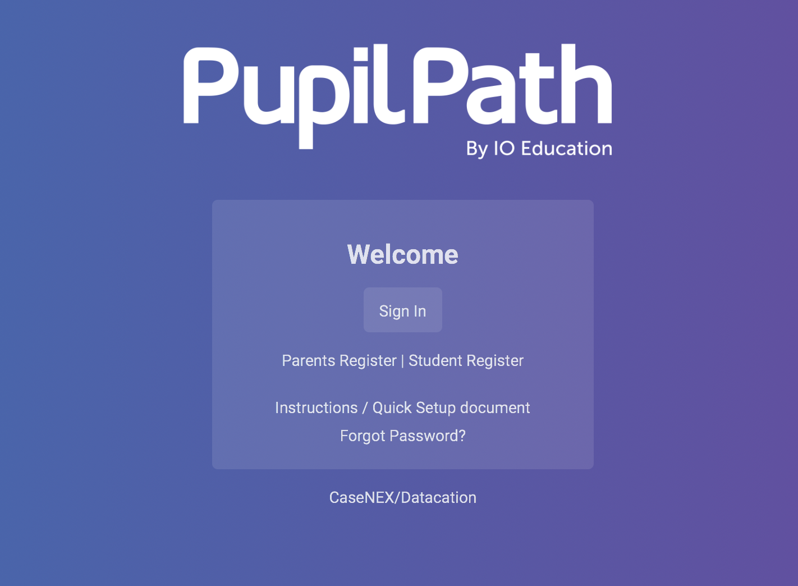

For this copycat website project, I decided to create my own version of the PupilPath website.
I did this project to help me understand HTML and CSS that I learned this year.
Some things I learned through the process of creating this are time-management. I should use my time wisely and do my projects in parts instead of doing everything the last minute.
I also learned to never give up, no matter how hard the tasks are because I remember my last year SEP teacher telling me that failure lead to success. If you don't struggle, you will never achieve your goals.
Speaking of never giving up, that leads to the challenges that I faced in this project. In my project, I needed two transparent box, one for the sign in box and one that surrounds the sign in box with the text "Welcome", "Parent Register | Student Register", etc. When I wrote the text that's supposed to go inside the box, it blends with the transparency and looks like all the text disappear. Another challenge that I faced is getting the exact font that the pupilpath website use. For some reason, when I tried out the font that was used in pupilpath, it wasn't working and it was the default font that repl used.
I overcame these challenges by making a div class for each box and text, seperating them from each other, then I used position relative to get the text at the right place. For the fonts, I used google fonts and searched up a font that's almost exact to the font pupilpath used.
Preview of the project